splatoon 2
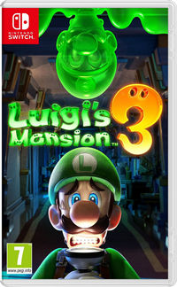Luigi´s Mansion 3
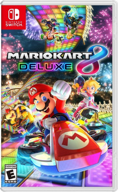Mario kart 8
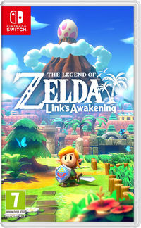Link´s Awakening
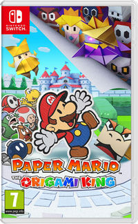Paper Mario
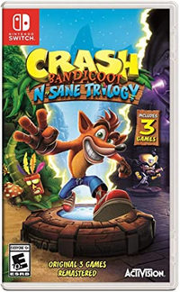Crash Bandicoot
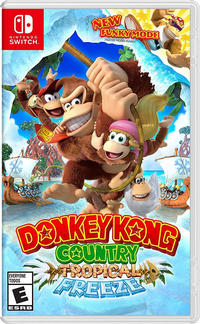Donkey Kong

Yoshi´s world
ejemplo1
Nintendo considera a Switch una consola híbrida. Se puede utilizar como consola de sobremesa con la unidad principal insertada en una estación de acoplamiento para conectarla con un televisor. Alternativamente, puede ser extraída de la base y utilizada de forma similar a una tableta a través de su pantalla táctil LCD, o colocada sobre una superficie gracias a su soporte plástico integrado siendo así visible por varios jugadores.
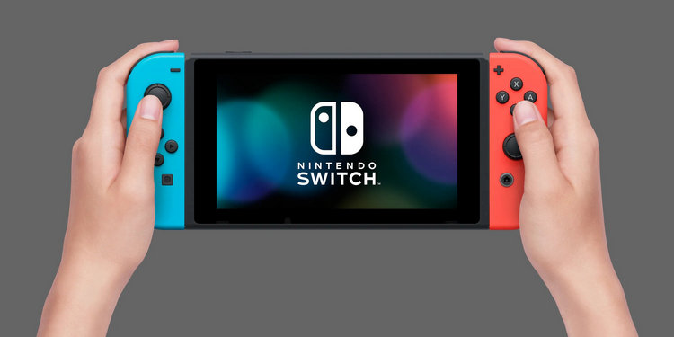 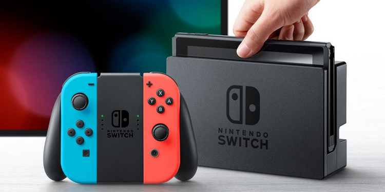splatoon 2
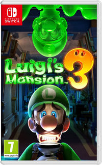Luigi´s Mansion 3
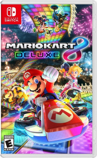Mario kart 8
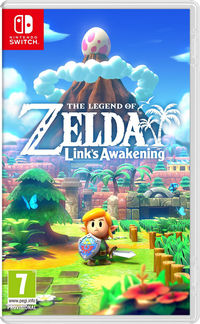Link´s Awakening
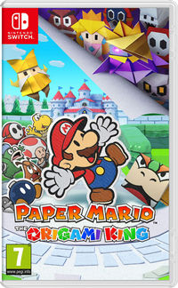Paper Mario
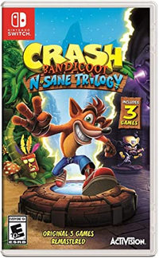Crash Bandicoot
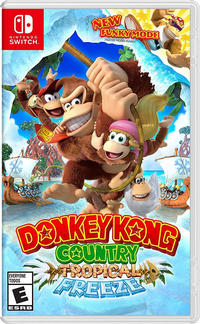Donkey Kong
Yoshi´s world

Las funciones de Nintendo Switch Online incluyen multijugador en línea, almacenamiento en la nube, chat de voz, acceso a una biblioteca de juegos de Nintendo Entertainment System (NES), así como otras promociones y ofertas.